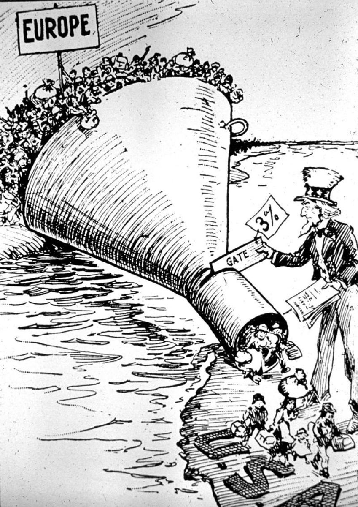

Chapter 32
STRATEGIES FOR THE MULTIPLE-CHOICE QUESTIONS
Your exam will have between 16 and 18 sets of multiple-choice questions. Each set will contain a stimulus prompt followed by 2, 3, or 4 questions. There are no sets with 1 or 5 questions. The majority of the stimulus prompts will use primary source passages and accounts written by modern historians. In addition, you will often be asked to evaluate a political cartoon, map, or graph.
Each of the 55 multiple-choice questions is worth 1 point. The multiple-choice section thus comprises 40 percent of 140 points on an APUSH exam. There is no guessing penalty, so be sure to answer each question.
The multiple-choice questions are not designed to test your ability to recall information from long lists of names, dates, and places. Instead, test writers focus on asking you to demonstrate your ability to use historical thinking skills such as contextualization, causation, change and continuity over time, comparison, and argumentation. As a result, answers focus on your ability to identify key historic trends, patterns, and influential ideas.
A SAMPLE SET OF QUESTIONS BASED ON A PRIMARY SOURCE PASSAGE
“I long to hear that you have declared an independency—and by the way in the new Code of Laws which I suppose it will be necessary for you to make I desire you would Remember the Ladies, and be more generous and favorable to them than your ancestors. Do not put such unlimited power into the hands of the Husbands. Remember, all Men would be tyrants if they could. If particular care and attention is not paid to the Ladies, we are determined to foment a rebellion, and will not hold ourselves bound by any laws in which we have no voice or Representation.”
Abigail Adams, Letter to her husband
John Adams, March 31, 1776
1.Which of the following issues of the period was Abigail Adams most directly concerned with in the excerpt?
(A)Widespread colonial opposition to the Stamp Act
(B)Growing colonial opposition to Paine’s arguments in Common Sense
(C)Growing colonial support for the principle of virtual representation
(D)The need to address the legal rights of married women
2.An implication of Adams’ argument is that
(A)colonial women would demand a new “Code of Laws” that would include universal suffrage for all American women
(B)colonial women sought to benefit from republican ideals of equality and individual rights
(C)colonial women would support a compromise with Great Britain to avoid a bloody war
(D)colonial women would support a strict interpretation of the Constitution
3.Which of the following best represents a logical extension of the ideas about government expressed in the excerpt?
(A)A weak federal government is needed to ensure the rights of the states.
(B)A strong Supreme Court is needed to regulate interstate commerce.
(C)A system of checks and balances is needed to prevent the abuse of power.
(D)An Electoral College is needed to prevent the direct election of the chief executive.
4.The ideas expressed in the excerpt have the most in common with ideas later expressed by
(A)supporters of Andrew Jackson
(B)proponents of the Wilmot Proviso
(C)signers of the Seneca Falls Declaration of Sentiments
(D)opponents of the League of Nations
A STEP-BY-STEP APPROACH
STEP ONE: Carefully read the attribution line at the end of the excerpt.
Most students begin by carefully reading the passage. Resist this temptation. Instead begin by focusing on the information in the attribution line at the end of the passage. The brief but vital information contained in the attribution provides the historic context for the passage. For example, the attribution line in the example on page 299 tells you three key facts. First, the passage is from a letter written by Abigail Adams to her husband John Adams. Second, Abigail wrote the letter at the end of March 1776, just 3 months before the signing of the Declaration of Independence. And third, Abigail is remembered as an advocate for the rights of colonial women.
These three facts are important historic clues that should focus your thinking. For example, what comes to mind when you think of Abigail Adams, women’s rights, and the year 1776? Your thoughts could include the impending Declaration of Independence and the potential role of women in the soon-to-be declared American republic.
STEP TWO: Read the passage looking for the main ideas.
The passage is called a stimulus for a reason. Don’t overanalyze the passage. Instead read the passage noting how the author uses key words and facts to support a main idea. In this passage, Abigail Adams urges her husband to “Remember the Ladies.” Adams’ admonition to “be more generous to them than your ancestors” is a reference to the fact that colonial women had few legal rights independent of their husbands. For example, a colonial woman usually lost control of her property when she married.
STEP THREE: Use the process of elimination.
Many times your knowledge of the topic will enable you to quickly spot the correct answer. However, there are questions in which the correct answer will not jump out and say, “Here I am!” When this happens, don’t panic. Each APUSH multiple-choice question will contain answers that are clearly historically incorrect. For example, in Question 1 on page 300, you can eliminate answer choice (A) because the furor over the Stamp Act ended in 1766, ten years before Adams’ letter. You can eliminate choice (B) because Common Sense enjoyed widespread popular support for its defense of republican principles and call for political independence. And finally, you can eliminate choice (C) because the colonies rejected the principle of virtual representation. Using the process of elimination, the correct answer to Question 1 is clearly (D).
It is important to remember that eliminating at least two answer choices means that you will have a 50-50 chance of correctly answering the question. With an educated guess, you should be able to answer at least 30 to 32 multiple-choice questions, thus earning half of the 63 to 65 points you need to score a 3.
STEP FOUR: Answer each question in the set.
You should now be ready to answer each question in the set. Here are the answers to questions 1–4:
Question 1: This question is based on the historical thinking skill of contextualization. Choices (A), (B), and (C) are all wrong because they are factually incorrect. Choice (D) is correct because Adams wanted her husband to write a new “Code of Laws” that would “Remember the Ladies.”
Question 2: This question is based on the historical thinking skill of argumentation. Choice (A) is incorrect because women did not demand the suffrage until the Seneca Falls Convention over 70 years later. Choice (C) is incorrect because Adams clearly states that she longs “to hear that you have declared an independency.” Choice (D) is incorrect because the Constitution had not yet been written. Choice (B) is correct because Adams’ statement shows an understanding of the connection between proclaiming a revolution based upon republican principles and extending them to women.
Question 3: This question is based on the historical thinking skill of continuity and change over time. Choices (A), (B), and (D) are incorrect because the passage contains no evidence to support these answers. Choice (C) is correct because Adams asserts “all Men would be tyrants if they could.” Adams would support a system of checks and balances as a continuation of her apprehension of giving anyone “unlimited power.”
Question 4: This question is based on the historical thinking skill of comparison. Adams is focused on a new “Code of Laws” that would include greater rights for women. Choice (A) is incorrect because Jackson’s supporters favored the suffrage for only white men. Choice (B) is incorrect because proponents of the Wilmot Proviso opposed the extension of slavery into the Western territories. Choice (D) is incorrect because the opponents of the League of Nations opposed entering into international organizations that would limit American autonomy. Choice (C) is correct because the signers of the Seneca Falls Declaration of Sentiments agreed with Adams’ conviction that America needed new laws recognizing the rights of women.
A SAMPLE SET OF QUESTIONS BASED ON A POLITICAL CARTOON

Courtesy of the Library of Congress
The Only Way to Handle It
1.The image most clearly references which of the following conditions in America’s political climate in 1921?
(A)A growing commitment to Wilson’s policy of moral diplomacy
(B)A growing resurgence of nativist sentiment
(C)A growing public opposition to the Ku Klux Klan
(D)A growing public support for women’s suffrage
2.Which of the following developments is the most direct effect of the situation portrayed in the image?
(A)An increase in the proportion of Chinese immigrants
(B)A decrease in the proportion of Mexican immigrants
(C)A decrease in the proportion of immigrants from Northern Europe
(D)A decrease in the proportion of America’s foreign-born population
3.The cartoonist would most likely support
(A)the execution of Sacco and Vanzetti
(B)the strict enforcement of prohibition
(C)the National Origins Act of 1924
(D)the decision in the Scopes Trial
A STEP-BY-STEP APPROACH
STEP ONE: Carefully examine the cartoon’s pictorial and textual elements.
Begin your analysis in the cartoon’s upper left corner where a huge mass of Europeans are clamoring to enter a large funnel that will take them to a new land labeled “U.S.A.” Now look at the figure of Uncle Sam standing on American soil at the funnel’s narrow end. Uncle Sam is inserting a gate labeled “3%” into the funnel. This action is curtailing the flood of people to a mere trickle.
STEP TWO: Consider the cartoon’s historic context.
The cartoon was not published in a historic vacuum. During the 30 years before the cartoon was published, a massive wave of immigrants left Europe for America. These so-called New Immigrants came from small towns and villages in Southern and Eastern Europe. Nativists opposed the New Immigrants because they were heavily Catholic and Jewish and because they threatened to take away jobs by working for low wages. Note the papers in Uncle Sam’s left hand. They are probably the newly enacted Emergency Quota Act of 1921. The law restricted the number of immigrants admitted from any country to just 3 percent of the number of residents from that same country living in the United States as of the 1910 census.
STEP THREE: Determine the cartoonist’s point of view.
Does the cartoonist support or oppose the Emergency Quota Act? The cartoon’s title, “The Only Way to Handle It,” clearly indicates that the cartoonist supports the new law as a prudent way to prevent unlimited immigration from overwhelming American culture.
STEP FOUR: Answer each question in the set.
You should now be ready to answer each question in the set. Here are the answers to questions 1–3:
Question 1: This question is based on the historical thinking skill of contextualization. Choice (A) is incorrect because as America embraced Harding’s policy of “normalcy,” the nation turned its back on Wilson’s idealistic commitment to moral diplomacy. Choice (C) is incorrect because the Klan enjoyed growing public support in the early 1920s. Choice (D) is incorrect because the states ratified the Nineteenth Amendment granting women the suffrage before Congress passed the Emergency Quota Act of 1921. Choice (B) is correct because the massive wave of European immigration portrayed in the cartoon was generating a strong nativist movement.
Question 2: This question is based on the historical thinking skill of causation. Choice (A) is incorrect because the Chinese Exclusion Act of 1882 prohibited immigration from China, thus preventing an increase in the proportion of Chinese immigrants. Choice (B) is incorrect because the new immigration quotas did not apply to Mexico, thus allowing Mexican immigration to increase. Choice (C) is incorrect because the new quotas favored immigration from Northern Europe, thus allowing the proportion of immigrants from this region to increase. Choice (D) is correct because the quotas sharply reduced the overall immigration into the United States, thus reducing the proportion of America’s foreign-born population.
Question 3: This question is based on the historical thinking skill of comparison. Choices (A), (B), and (D) are all incorrect because the cartoon provides no direct evidence to support how the cartoonist would view the execution of Sacco and Vanzetti, the enforcement of prohibition, and the decision in the Scopes Trial. Choice (C) is correct because the cartoonist clearly favored the Emergency Quota Act of 1921. Given his support for immigration quotas, the cartoonist would most likely support the even more restrictive quotas in the National Origins Act of 1924.